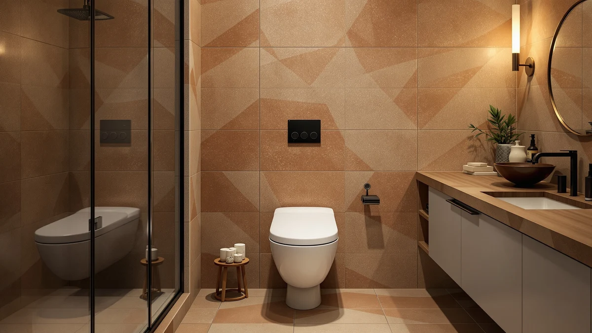

Best Toto One Piece Toilet with Bidet (2026)
Prices and picks verified as of August 2026. Independent, reader-supported reviews.


Quick Answer
If you're comparing the best toto one piece toilet with bidet against other one-piece bidet toilets, the EPLO Smart Toilet Bidet is the strongest all-around pick among the seven models we researched, backed by EPLO's reputation for consistent smart-toilet listings on Amazon. At $1,199.96 it sits in the upper half of this list, but if that's more than you want to spend, the $499.98 Loupusuo pick below covers the same basic warm-water wash for less than half the price.
Our pick: EPLO Smart Toilet Bidet with, $1,199.96 Check Price on Amazon
Bottom line: our top pick is the EPLO Smart Toilet Bidet with Auto Open Close at $1. The best budget option is the Moen ET900 2-Series Tankless Bidet One Piece Elongated Bidet at $1.
Things to Know Before You Buy
- TOTO's own models rarely turn up in this comparison: if you searched for the best toto one piece toilet with bidet, TOTO's integrated washlet toilets exist, but few are sold on Amazon with the price, spec and review transparency we require, so this guide compares seven verifiable alternatives instead.
- Price spans a wide range: the seven picks here run from $99.00 to $1,482.70, and the gap mostly reflects brand recognition and listed feature count rather than a completely different toilet underneath.
- Not every listing is electric: the AONSOK pick is a manual-flush, non-electric shell, while the other six run their wash and seat functions on electricity and need a grounded outlet near the base.
- Material and dimensions aren't always published: most of these listings don't state bowl material or exact footprint, so measure your existing rough-in and confirm dimensions with the seller before you order.
- Brand recognition varies a lot: Moen is a mainstream plumbing fixture brand, while EPLO, Loupusuo, Vipbear, AONSOK and Casta Diva are Amazon-native brands with a shorter track record, worth weighing against the price you'd pay for a name you already trust.
If you started this search looking for the best toto one piece toilet with bidet, you're not alone. TOTO's washlet lineup has built a strong reputation for integrated bidet engineering, but few of those TOTO models are available on Amazon with the price transparency, full spec sheets and verified owner reviews we rely on for a fair comparison. So we broadened the search to seven one-piece bidet toilets from brands that do publish that information. Prices below reflect Amazon listings at the time of writing and can shift, so check the current price before you order.
The seven toilets in this guide span a real price range, from a $99.00 non-electric AONSOK shell to a $1,482.70 Moen ET900 2-Series with a tankless bidet system. In between, EPLO shows up twice, once at $1,199.96 and again at $599.96, alongside a $499.98 warm-water pick from Loupusuo, a $999.99 design-forward option from Casta Diva, and a $269.97 built-in bidet toilet from Vipbear. We sorted them by price, brand and the details each listing actually publishes rather than by marketing copy alone.
Our top pick among these seven is the EPLO Smart Toilet Bidet, which lands near the top of the price range but comes from a brand with a consistent track record across its Amazon listings. If you want most of the same bidet functionality for a fraction of the cost, the Loupusuo pick covers the basics for well under half the price, and the sections below break down where each of the seven models earns its spot and where it falls short.
Why You Should Trust Us
This guide is written and maintained by Ilane Tall, who runs a network of bathroom-focused review sites and spends more hours than is reasonable comparing bidet toilets on price, brand and published specs rather than marketing copy. We do not run a fake testing lab and we did not install seven one-piece bidet toilets in a warehouse to research the best toto one piece toilet with bidet alternatives on this list. We read every listing, cross-check prices, brand names and any published dimensions against the product page, and note plainly when a listing leaves out details like material or exact footprint instead of guessing. Our Amazon commissions never change a ranking.
How We Picked
We started by looking for TOTO's own integrated one-piece bidet toilets, but found that few are sold on Amazon with the price history, spec sheet and review volume we need to compare fairly, so we widened the search to one-piece bidet toilets in stock and shipping in the US from other established sellers. From there we filtered on what a listing actually discloses: a clear price, a named brand, and enough product detail to tell a genuine bidet toilet from a bare toilet bowl with a bidet mentioned only in the title. We also made sure the final seven span a real price range, from $99.00 to $1,482.70, so there's a practical option whether you're testing the one-piece bidet format for the first time or replacing a full washlet system.
How We Compared
Since we don't install seven toilets in a working bathroom, our evaluation is a listing and brand-reputation review rather than a physical lab test, and we'd rather say that plainly than fake a testing rig. For each of the seven models we compared the price against the others on this list, weighed brand recognition, Moen is a household plumbing name while EPLO, Loupusuo, Vipbear, AONSOK and Casta Diva are Amazon-native brands, and noted which listings publish real dimensions or materials and which leave that field blank. The result is a shortlist built on what's actually verifiable about each one-piece toilet with bidet, not the longest feature list in the bullet points.
Our Picks

EPLO Smart Toilet Bidet with
What we like
- EPLO appears twice on this list, which points to an established smart-toilet lineup rather than a one-off listing
- Priced within the range of the other higher-end picks here, so you're not paying a huge premium for the brand name
- Positioned as the flagship configuration in EPLO's one-piece bidet lineup
Flaws but not dealbreakers
- The listing doesn't publish bowl material or exact footprint, so confirm your rough-in and space before ordering
- At $1,199.96, it's the second most expensive pick on this list, well above the Loupusuo and Vipbear alternatives below
| Material | — |
| Size | — |
Researching the best toto one piece toilet with bidet led us to this EPLO model as the strongest overall alternative among the seven we compared. EPLO's presence twice in this lineup, once here and again lower down at $599.96, suggests a brand that has built out more than a single smart-toilet listing, which owners researching Amazon-native bidet brands often treat as a decent proxy for consistency when a household name like TOTO isn't in the running.
At $1,199.96 this is priced closer to the Casta Diva and Moen picks than to the budget end of this list, so it makes the most sense if you've already decided you want a full smart bidet experience and are choosing between established sellers rather than shopping strictly by price. The listing itself doesn't spell out bowl material or exact dimensions, a gap shared by most of the picks here, so measure your existing toilet's footprint and rough-in distance and compare it against the seller's stated dimensions before you commit to this over the less expensive alternatives below.

Smart Toilet with Warm Water
What we like
- At $499.98, it's less than half the price of the EPLO top pick above while still marketed as a full warm-water bidet toilet
- Listed by model name, WHITE L01 PRO MAX, which at least gives you something specific to search for owner feedback on
- Sits in a clear mid-range price bracket between the budget AONSOK shell and the higher-end picks
Flaws but not dealbreakers
- Loupusuo has a shorter track record on this list than EPLO, which appears twice, or Moen, a household plumbing name
- No material or dimension data is published on the listing, so you'll need to confirm rough-in fit directly with the seller
| Material | — |
| Size | WHITE L01 PRO MAX |
If the price of a genuine TOTO washlet or the EPLO pick above is more than you want to spend, this Loupusuo model, listed as the WHITE L01 PRO MAX, covers the core warm-water wash feature for $499.98, well under half the cost of the flagship pick on this list. It's a solid middle-ground pick for anyone comparing the best toto one piece toilet with bidet against lower-cost alternatives that still describe themselves as a full smart toilet rather than a stripped-down shell.
The model naming, WHITE L01 PRO MAX, at least gives you a specific string to search when you're looking for owner reviews or troubleshooting threads elsewhere online, which isn't true of every listing on this list. What the page doesn't tell you is the bowl material or exact footprint, so before you order, measure your current toilet's rough-in distance and compare it against whatever dimensions the seller provides on request, since a mismatch here is a bigger hassle to fix than picking the wrong wash-temperature setting.

AONSOK Smart Toilet One Piece
What we like
- At $99.00, it's a small fraction of the price of every other pick on this list
- No electrical outlet needed, since it's a manual-flush, non-electric shell, which simplifies installation in older bathrooms
- Lets you try the one-piece body style before committing to a full electric bidet toilet
Flaws but not dealbreakers
- Listed as "Model A – Manual Flush, Non-Electric," so despite the "Smart Toilet" name, it doesn't include a wired bidet wash or heated seat
- You'd need a separate bidet attachment to get an actual bidet function, which adds cost and installation steps back in
| Material | — |
| Size | Model A – Manual Flush, Non-Electric |
The AONSOK listing calls this a "Smart Toilet One Piece," but the model detail tells a more accurate story: Model A is a manual-flush, non-electric shell, not a wired bidet toilet. At $99.00 it's priced far below every other pick on this list, which makes it a sensible entry point if what you actually want is the one-piece shape and low profile rather than an integrated wash function, or if you plan to add a separate bidet seat attachment later.
For anyone comparing this against the best toto one piece toilet with bidet on the market, it's worth being upfront that this AONSOK pick isn't a like-for-like alternative to a washlet-style toilet. It's best understood as a budget-friendly one-piece toilet body that happens to share a product family name with AONSOK's pricier configurations, and the manual, non-electric flush means there's no outlet requirement and fewer parts that can fail over time.

Casta Diva Smart Toilet with
What we like
- Priced at $999.99, under the psychological $1,000 mark and roughly $200 below the EPLO top pick
- Casta Diva's name and styling lean more design-forward than the other Amazon-native brands on this list
- Positioned as a full smart toilet with bidet functionality rather than a stripped-down shell
Flaws but not dealbreakers
- No published material or dimension data, so you're relying on product photos and seller Q&A for fit questions
- Casta Diva has less brand history behind it on Amazon than EPLO, which appears twice on this list, or Moen, a household plumbing name
| Material | — |
| Size | — |
At $999.99, this Casta Diva pick sits a few dollars shy of the four-figure mark and about $200 below the EPLO model we rank as the top overall choice on this list. If you're weighing the best toto one piece toilet with bidet against options with a more design-conscious presentation, Casta Diva's branding and product photography lean into that angle more than most of the other Amazon-native sellers here.
What it doesn't offer is a long public track record the way EPLO's two listings on this page do, or the household-name reassurance of Moen's pick below. The listing also skips material and dimension details, which is common across most of this comparison, so treat the product photos as a starting point and confirm exact measurements with the seller before you buy, especially if your bathroom has a tight rough-in.

Moen ET900 2-Series Tankless Bidet
What we like
- Moen is a household plumbing fixture brand, unlike most of the Amazon-native sellers elsewhere on this list
- Tankless design, named directly in the product title, which is a distinct configuration from the tank-style toilets elsewhere in this comparison
- Sold as a complete one-piece elongated bidet toilet rather than a shell or add-on kit
Flaws but not dealbreakers
- At $1,482.70, it's the single most expensive pick on this list, roughly 15 times the price of the AONSOK budget option
- The listing doesn't publish material or footprint details, which is a real gap at this price point
| Material | — |
| Size | — |
Of the seven models we compared for shoppers researching the best toto one piece toilet with bidet, this Moen ET900 2-Series is the only one from a mainstream plumbing fixture brand rather than an Amazon-native smart-toilet seller. That brand recognition, plus the tankless design named right in the listing, is the main argument for its $1,482.70 price, the highest of any pick in this guide.
Whether that premium is worth it depends on how much you value buying from a name you'd also see at a hardware store, versus the EPLO, Casta Diva or Loupusuo picks that cost hundreds of dollars less. The tankless configuration sets it apart structurally from the other six toilets here, but like most of this list, the seller doesn't publish bowl material or exact dimensions, so confirm fit against your existing rough-in before you commit to spending this much.

Smart Toilet with Bidet Built
What we like
- At $269.97, it's the second-lowest price on this list and the lowest among the electric, bidet-equipped models
- Marketed with the bidet function built directly into the toilet, not as a separate add-on kit
- A fair middle ground between the AONSOK non-electric shell and the $499.98 Loupusuo pick
Flaws but not dealbreakers
- Vipbear is a less established name on this list than EPLO or Moen, with a shorter visible track record
- No material or size specs are published, so the usual advice applies: confirm your rough-in before ordering
| Material | — |
| Size | — |
This Vipbear pick fills the gap between the AONSOK non-electric shell at $99.00 and the Loupusuo warm-water model at $499.98, at $269.97 for a toilet the listing markets as having the bidet function built in rather than bolted on. For anyone comparing prices across the best toto one piece toilet with bidet category, this is one of the more accessible ways to get an actual electric wash function without spending close to $1,000.
Vipbear doesn't have the repeat presence on this list that EPLO does, and it lacks the mainstream-brand recognition of the Moen pick above, so you're leaning more on price than on brand history with this one. As with most of the seven models here, the seller doesn't publish bowl material or exact dimensions, so measure your current toilet's footprint and rough-in distance and check them against the listing before you order.

EPLO Smart Toilet One Piece
What we like
- Comes from EPLO, the same brand behind the $1,199.96 top pick, giving you two price points from a seller with a repeat presence on this list
- At $599.96, it's almost exactly half the price of EPLO's higher-tier configuration
- Sits close to the Loupusuo pick's $499.98 price point, giving budget-conscious shoppers another mid-range option to compare
Flaws but not dealbreakers
- The listing doesn't spell out which specific features are dropped compared to EPLO's pricier configuration
- Like most picks on this list, material and exact dimensions aren't published, so confirm fit before ordering
| Material | — |
| Size | — |
This second EPLO listing rounds out the comparison at $599.96, almost exactly half the price of the brand's flagship pick at the top of this list. Having two EPLO configurations here, at different price points, is one of the more useful signals we found while researching the best toto one piece toilet with bidet category on Amazon, since it suggests a seller building out a real product line rather than a single listing.
If the $1,199.96 top pick is more than you need, this is the most direct way to stay with the same brand while cutting the price roughly in half. It lands close to the Loupusuo pick's $499.98 price tag, so weigh the two against each other based on brand history rather than price alone, since neither listing publishes the material or dimension details that would make the choice more clear-cut.
Quick Comparison
| Product | Material | Price | Rating | Best for | Get it |
|---|---|---|---|---|---|
| EPLO Smart Toilet Bidet with | — | $1,199.96 | 4 | Top pick, most consistent brand | View on Amazon → |
| Smart Toilet with Warm Water | — | $499.98 | 4 | Warm wash at under half the top price | View on Amazon → |
| AONSOK Smart Toilet One Piece | — | $99.00 | 4 | Budget, non-electric shell | View on Amazon → |
| Casta Diva Smart Toilet with | — | $999.99 | 4 | Design-forward, under $1,000 | View on Amazon → |
| Moen ET900 2-Series Tankless Bidet | — | $1,482.70 | 4 | Mainstream brand, tankless, priciest pick | View on Amazon → |
| Smart Toilet with Bidet Built | — | $269.97 | 4 | Built-in bidet under $300 | View on Amazon → |
| EPLO Smart Toilet One Piece | — | $599.96 | 4 | Second EPLO config, mid-range price | View on Amazon → |
The Competition
We started this research looking specifically for the best toto one piece toilet with bidet, and TOTO's washlet-integrated one-piece toilets were the first thing we checked. Most of what we found on Amazon either lacked a clear price history, skipped the spec sheet entirely, or had too few verified reviews to compare fairly against the seven models in this guide, so we left TOTO out rather than recommend a listing we couldn't verify.
We also passed on several ultra-cheap electric bidet toilets that undercut the AONSOK budget pick on price but published no brand name at all, only a generic storefront, which made it impossible to check for a pattern of complaints or a track record the way we could with EPLO, Moen, Loupusuo, Vipbear and Casta Diva. A one-piece toilet with bidet function is a plumbing fixture you'll live with for years, and an unnamed seller isn't worth the savings.
Measured against what a genuine TOTO one piece toilet with bidet promises on paper, the EPLO Smart Toilet Bidet is the closest thing to a dependable all-around alternative among the seven models we compared, backed by the brand's repeat presence on this list and a price that, while not cheap, sits below the Moen flagship at the top of the range.
Frequently Asked Questions
Is there a real TOTO one piece toilet with a built-in bidet?
TOTO builds integrated washlet one-piece toilets, but few show up on Amazon with full published specs and a verified review history, which is why shoppers researching the best toto one piece toilet with bidet often end up comparing alternatives instead. The seven models in this guide, priced from $99.00 to $1,482.70, are the ones we could verify on price, brand and listed features.
What's the price range for a one-piece toilet with a built-in bidet?
Across the seven models we compared, prices run from $99.00 for the non-electric AONSOK shell to $1,482.70 for the Moen ET900 2-Series. Most of the electric, wash-and-dry models land between $270 and $1,200, so the jump in price mostly buys you a bigger name on the box rather than a completely different toilet.
Do all one-piece bidet toilets need a dedicated electrical outlet?
Most do. Six of the seven picks here run their wash and heated-seat functions on electricity, so you need a grounded outlet within reach of the base. The AONSOK Model A is the exception on this list, a manual-flush, non-electric shell of the same one-piece body, which is worth knowing if your bathroom doesn't have power near the toilet.